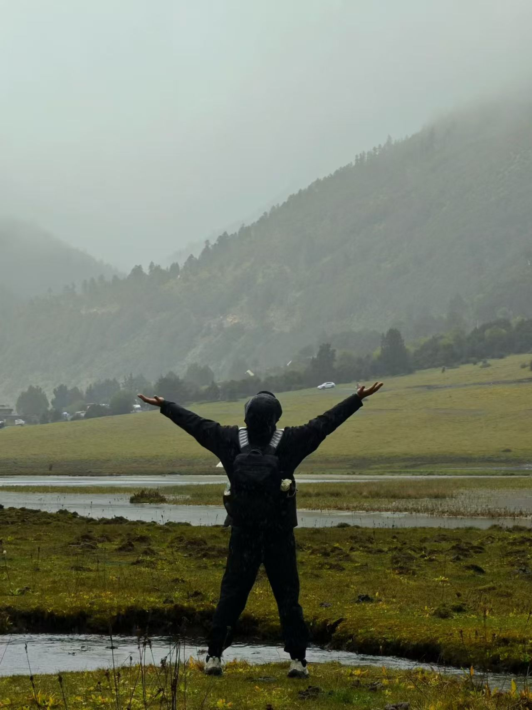
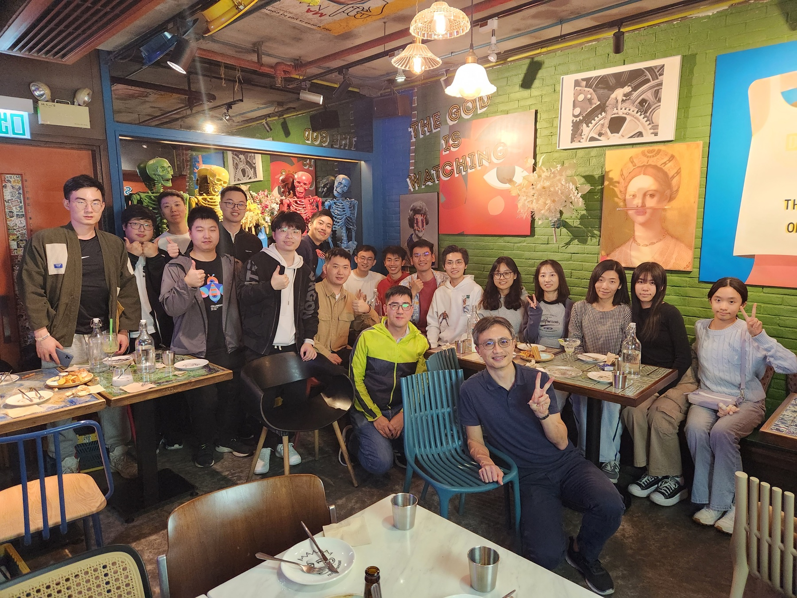
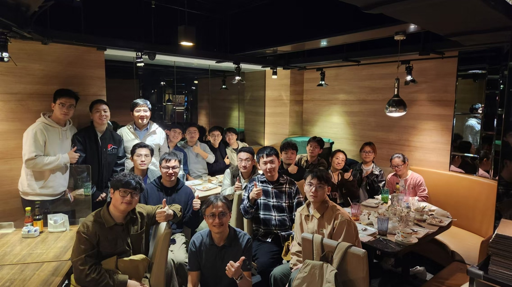

生活随记
谢谢你来这里了解我的生活。😊 我喜欢结识新朋友，聊聊各自的见闻。朋友们说我随和、可靠，也容易相处。平时我爱旅行、徒步和爬山。每到一个新地方，我喜欢多走走，看看没见过的风景，也了解当地人的生活和文化。
如果你有喜欢的徒步路线、想推荐的地方，或想约我一起徒步，欢迎随时联系我。
旅行
迪庆藏族自治州 · 香格里拉
最近去了趟香格里拉，沿着山谷徒步，也爬了雪山。我在那里待了好些天，有机会了解当地藏族居民的日常生活和习俗。第一张照片里，山顶还笼着云，阳光刚照到谷底的草地。那一幕让我想起《塞尔达传说 旷野之息》里的场景。




NGai Lab 日常
香港大学 · 香港特别行政区
实验室里大家相处得很融洽。黄毅教授常约我们一起吃饭，有时是几个人小聚，有时是全组聚餐。


清华毕业纪念
清华大学 · 北京
，我从清华大学毕业，获得电子信息工学硕士学位。